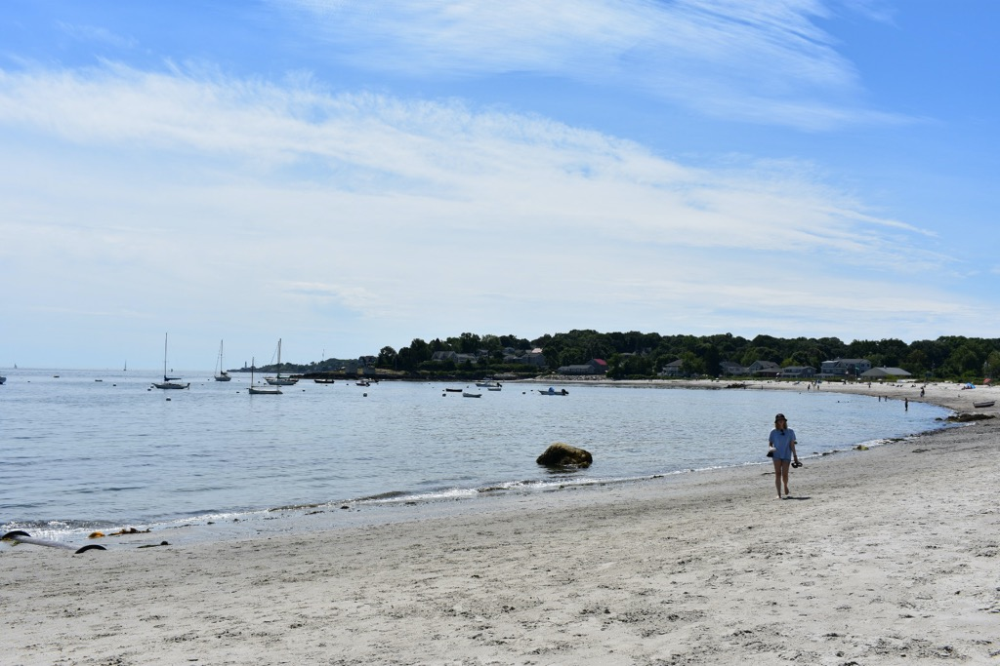
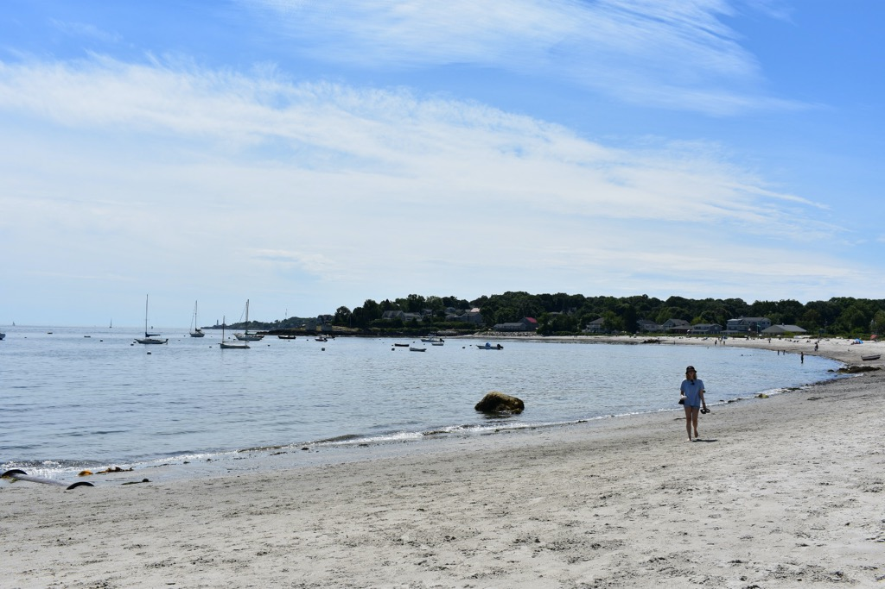

Attractions
Portland Observatory

Located on Munjoy Hill in downtown Portland, the Portland Observatory is a historical landmark to the city of Portland. It offers a 360 degree view of Portland and the harbor.
Portland Headlight

Portland Head Light is located 10 minutes outside of Portland at Fort Williams Park in Cape Elizabeth. The park is a historical fort that features this beautiful light house. As one of the most photographed light houses in the US, the park is a must see for a stroll in nature.
Bug Light
Also located a few minutes outside Portland is Bug Light, both a park and a light house. This park offers full views of the Portland Waterfront and Casco Bay. This spot is great for picnics, walks, and enjoying the views.
Portland Art Museum
The Portland Art Museum is located in the middle of downtown Portland. It is open to the pubic, free for students, and free on Friday afternoons. Although it is a smaller museum, the space features well known Maine artists in all medias. It offers a lovely way to pass a few hours of time.
Willard Beach
 

Willard is located right down the street from Buglight. It has views of the main waterway into Casco Bay which allows beach goers to watch boats come in and out while enjoying the sun. With little waves, the beach is very family friendly and great for a relaxing day in the sun. Be warned, the water is quite chilly!